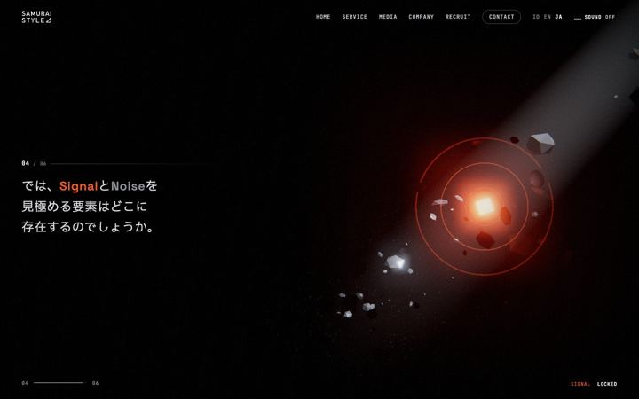
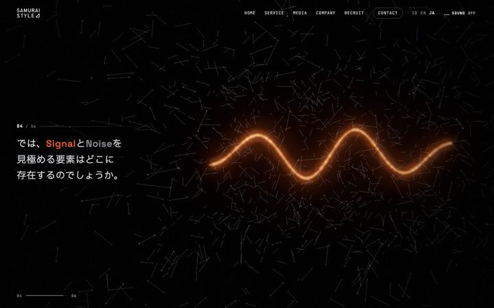
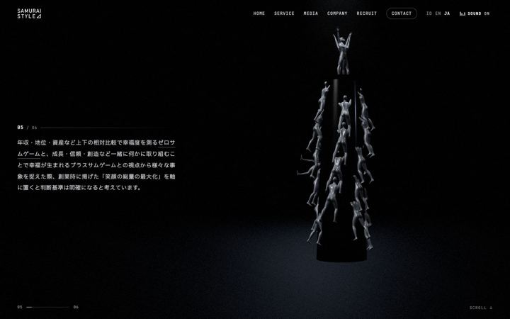
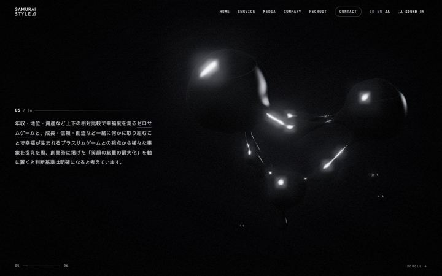

拡散する格子
開く ↗正確に並んだ点の格子（＝ひとつの正解）が、一角から溶けて流れに引き伸ばされ、分裂して1→8倍に数を増やしながら闇へ散る。1コマの中に「まだ整った側」と「崩れていく側」が並び、中心の朱の一点は増えた灰色の点に紛れて消える。右下に状態の数と S=k·ln W。

上が「全体の雰囲気」の候補、下が「節ごと」の候補です。画像を押すと実物が開きます（PC は1画面目と全体、右の細い列はスマホ）。文言はすべて今のサイトの原文のままです。
3D・真っ暗の中で。型の違う3案。
正確に並んだ点の格子（＝ひとつの正解）が、一角から溶けて流れに引き伸ばされ、分裂して1→8倍に数を増やしながら闇へ散る。1コマの中に「まだ整った側」と「崩れていく側」が並び、中心の朱の一点は増えた灰色の点に紛れて消える。右下に状態の数と S=k·ln W。
闇に浮かぶ細く整った1本の煙の輪。スクロールで乱流が強まり、輪がほどけ、渦が渦を生んで画面いっぱいへ手に負えなく広がる。輪の中心の朱の一点は煙に呑まれていく。粒でも線でもなく、体積（煙）で見せる型。


継ぎ目のない黒い立方体（＝ひとつの正解）が一角から割れ、塊はさらに小片へ、小片は塵へと、砕けるたびに数を増やして闇へ散る。割れ目の奥に朱の光が一瞬のぞき、やがて紛れる。硬い立体の質感で見せる型。音はオンで割れる数だけ鳴る。


1〜3＝照らす・合わせる・拍、4〜6（追加）＝つながり・見る角度・時間。
真っ暗な空間に無数の破片（ノイズ）。見えるのは光が当たった所だけ。一筋のサーチライトが闇を掃き、照らしては通り過ぎ、最後にひとつだけ朱く応える破片（Signal）で止まる。光そのものが「見極める要素」。PCはマウスで光を少し振れる。

ざわつく波形の列が奥から手前へ流れる。目盛りが左右に探り、1点で合うとノイズが静まり、ずっとそこにあった朱い稜線（Signal）が奥から手前まで立ち上がる。音はラジオの同調（帯域を絞った雑音→澄んだ正弦波）。


無数の点がでたらめに瞬く空に、ひとつだけ同じ拍で瞬く点がある。観測を重ねるほど、でたらめな瞬きは均されて静まり、同じ拍の一点だけが朱く脈打って残る。右下の波形は拍に合わせて重ねた明るさで、重ねるほど1本の山が立つ（＝再現するものが Signal）。

闇に同じ灰色の点が無数に浮かび、どれも同じに見える。スクロールで、ある点から次の点へ朱い線がつながり始め、奥へ一本の筋を描く。どこにもつながらない点は闇に沈む。手がかりは「前後とつながっているか（一貫性）」。

短い灰色の線の破片が無数に散らばり、どこから見てもでたらめ。視点が回り込み、ただ1つの角度に立った瞬間だけ、破片の一部が1本のなめらかな波に重なって朱く灯る。手がかりは「どこに立って見るか（視点・立場）」。音は2つの音のうなりが、そろうと1つになる。



灰色の砂でできた塊が、時間とともに外側からほどけて風に流れ消えていく。最後に残るのは、奥にずっとあった小さな朱い芯だけ。手がかりは「時間が経っても残るか（一時的なノイズ／本質的なシグナル）」。

3D・真っ暗の中で。音が主役の3案（SOUND を ON にして見てください）。
黒い柱に濡れた石膏の人が群がって登り、頂上の1人ぶんのスポットを奪い合う（登った人は引きずり落とされ続ける）。柱が沈むと全員が床に降りて手をつなぐ輪になり、輪の中の朱（笑顔の総量）が育つ。音はざわめき（母音の帯域ノイズ）・うめき・軋み・ねちょっとした音＋落ちる時のどよめき → 手がつながるたびに鈴の音が重なり明るい和音へ。

黒い油のような3つの塊が糸を引いて取り分を奪い合う（体積の合計は一定・糸が伸びて切れ、しずくが垂れる）。やがて寄り合って1つに溶け、合計そのものが増え、内側から朱の光が透ける。音はぬめる低音と泡・糸が伸びる「ぎゅー」・切れる「ぷつっ／ねちゃっ」 → 溶け合うと温かい和音と内の光のうなり。



左右の暗がりから伸びた無数の糸が1つの黒い結び目を綱引きする（結び目は大きくならない・糸には粘りのしずく）。糸がほどけて1枚の織物に編まれ、交点ごとに朱が灯り、織物が広がる。音は糸の摩擦の軋みと低い踏ん張り → 糸が織物に収まるたびに弦として鳴り、和音になる。

3D・真っ暗の中で。型の違う3案。ご一報の文と CONTACT まで入っています。
真っ暗な野で、一人ひとりが額の灯りで自分の足元だけを照らし、ばらばらに見回している。顔が上がり全員が同じ遠くを向くと、短い灯りが1本の長い道になって地平の朱（シグナル）まで届く。音はスイッチのカチッとばらばらの小さな電子音 → 1つの拍にそろい、朱が灯るとサイトのシグナル音。


無数の鳥が、目の前に出ては消える小さな餌へそれぞれ突っ込む（餌が消えると近くの別の餌へ乗り換え）。餌が消えると群れが1つの大きなうねりになって呼吸し、最後は長い帯となって遠い朱へ流れる。音は細かい羽音と鳴き声 → 群れの息（大きく吸って吐く風）と和音、朱でシグナル音。

大小の歯車が宙でばらばらに空回りし、引っかかって震え、火花が散る。1つずつ噛み合う位置へ収まり、小さく速い歯車から大きく遅い歯車へ力が渡り、全体がゆっくり1つの時を刻む。大歯車の軸に朱が灯り、長い針が回る。音は歯車ごとに違う高さのカチ（ばらばらの拍）と擦れ → 大歯車の低い「コトン」と鐘。